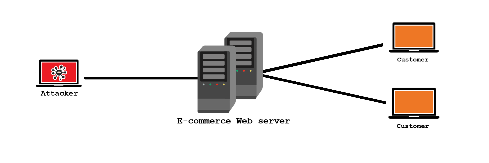

Lina's Blogs
Welcome to my webpage. Here, I will share weekly blogs for my CIT 480 class.
Blog 0: DDOS Attack
DDoS stands for Distributed Denia-of-Service attack. It is a cyber attack with the intend of disrupting the normal operations of the target server or network.
DDoS is made possible by flooding the target with a constant flood of traffic. The heavy traffic overwhelms the target system and causes a disruption or denial of service to normal everyday traffic.
Dos
DoS which stands for Denial-of-service attack, is when an attacker uses only a single computer to direct heavy traffic to a specific target. Normally, it is easier for a server or a Network to stop a DoS attack since it is coming from a single point. As we can see in the example below, a single attacker is trying to launch a DoS attack against a Amazon web server. If the attacker is successful, the server would crash and customers would no longer be able to shop. However, as mentioned before, a DoS attack is much easier to control than a DDoS attack. 
TThe difference between DoS & DDoS is the number of attackers involved. Dos is when a single attacker, attacks using a single computer and DDoS is when multiple attacking computers are involved. Now, instead of an attack coming from a single source, the amazon web server in this case, has to deal with multiple attacking sources. When this happens, the heavy traffic sent from the attackers will overwhelm the server resources and it will cause it to crash. Amazon customers will now be denied access to services since the server is occupied with a DDoS Attack. Because there are many attackers involved, a DDoS attack is harder to control.
.png)
The simple answer is by using malicious software. The attacker will develop a malware program and distribute it over the internet and put it on websites or email attachments. If a vulnerable computer gets to these infected websites or opens the infected email attachments, the malware will be installed on their computer without the owner knowing that his/her computer has been infected. So now their computer has been recruited with other computers to take part in a DDoS attack. This army of computers is refereed to as the Botnet. Now this botnet can be controlled by the attacker who is called the bot master.
.png)
You can configure your network hardware against DDoS attacks, deploy anit-DDoS hardware and software modules, and deploy a DDoS protection appliance.
Learn more about preventing DDoS attacks by reading this article .